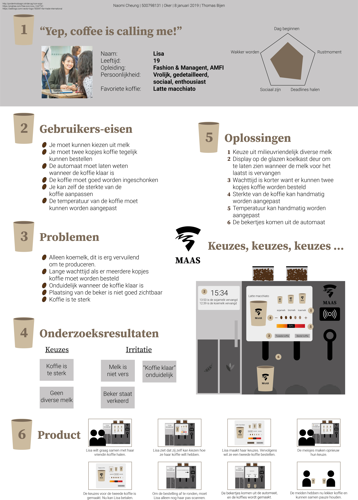

HvA x MAAS
At the campus of HvA in Amsterdam there are a lot of coffee machines in the buildings. However students and even teachers are struggling with getting their coffee. My job was to redesign the coffee machine and the experience.
UX Designer
User research, redesign
Research
Before I redesigned the coffee machine, I used UX research methods to get to know the user more. Deep Hanging Out, Persona, User Scenario and User Requirement List has been used to improve the user experience of getting coffee. With all the insights I gained, I had to present the problem and solution on a poster.
